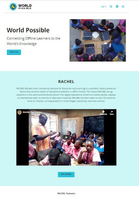
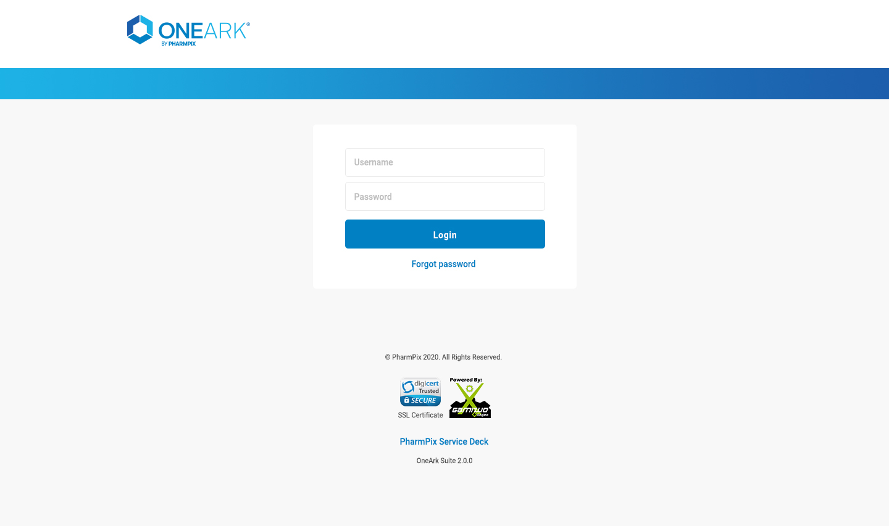
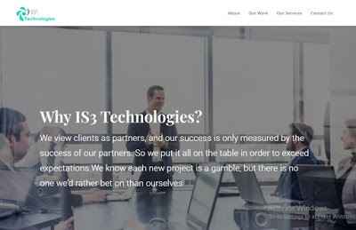
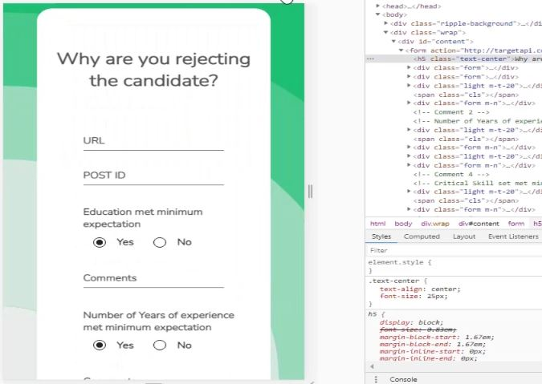
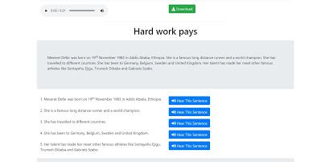

Education
-
BS, Computer Science
University of Central Punjab · Oct 2022 – Jul 2026
-
ICS
Punjab Group of Colleges · Jul 2020 – Jul 2022
Available for AI / ML roles
I build intelligent systems that reach off the screen — large language models and retrieval pipelines on the software side, ESP32 sensors and embedded firmware on the hardware side. Currently an AI Engineer at Techohub Systems, and a 2026 Computer Science graduate of the University of Central Punjab.
01 — About
I am a recent Computer Science graduate with a strong interest in Artificial Intelligence, Machine Learning and AI-powered IoT solutions. My primary areas of expertise include Python, deep learning, natural language processing, large language models, computer vision and intelligent system development.
I have gained practical experience through academic, freelance and industry-based projects involving machine learning, embedded systems, sensor integration, backend development and AI-enabled applications.
One of my major projects is the Smart Baby Band, an AIoT-based monitoring system that uses heart-rate, motion, environmental and audio sensors to monitor a baby's condition and detect important events such as crying and unusual movement. I contributed to the ESP32-based hardware integration, sensor communication, MQTT architecture, FastAPI backend and reliable data transmission between the device, backend and mobile application.
BS, Computer Science
University of Central Punjab · Oct 2022 – Jul 2026
ICS
Punjab Group of Colleges · Jul 2020 – Jul 2022
02 — Experience
Jul 2026 – Present
Techohub Systems · Internship · Lahore, Pakistan · On-site
Building and extending Productix Co-Pilot and ERPNext-based solutions. Work spans LLM and Retrieval-Augmented Generation pipelines, NLP, REST API and backend development, database operations, authentication, ERP customisation, containerisation and deployment configuration.
Jun 2020 – Oct 2023 · 3 yrs 5 mos
Fiverr & Upwork · Freelance · Remote
Delivered multiple client projects using HTML, CSS, JavaScript and Bootstrap 4, focused on responsive, accessible and visually polished interfaces. Every project closed with a 5-star client rating across Upwork, Fiverr and local platforms.
Jun 2020 – Oct 2022 · 2 yrs 5 mos
Fiverr · Freelance · Remote
Took on client machine-learning briefs in Python — data preparation, model training and evaluation, and turning notebook experiments into results clients could actually use.
Dec 2022 – Jul 2023 · 8 mos
Fiverr · Freelance · Remote
Edited short-form and long-form client video in Adobe Premiere Pro, handling pacing, colour and sound to a consistent delivery standard.
Nov 2022 – Jan 2023 · 3 mos
Youth General Assembly · Part-time · Lahore, Pakistan
Video editor for “Beyond the Youth”, a flagship national-level conference. Produced event videos with high-quality visuals and smooth transitions, consistently meeting the organising team's deadlines.
03 — Projects
AI, embedded systems and full-stack builds — academic, industry and personal.
Final Year Project · University of Central Punjab
An AIoT monitoring band that watches a baby's heart rate, motion, environment and audio, and flags events like crying or unusual movement. I built the ESP32 hardware integration, sensor communication, MQTT architecture and the FastAPI backend, plus the data path between device, server and mobile app.
Techohub Systems · Internship
An LLM-powered assistant layered over ERPNext business data. Work covered Retrieval-Augmented Generation, NLP, REST API design, authentication with JWT, database operations and containerised deployment with Docker Compose.
ESP32-CAM · Computer Vision
A low-cost attendance system that recognises registered students in real time. ESP32-CAM streams live video to a FastAPI backend running OpenCV LBPH face recognition, which marks attendance straight into Google Sheets and signals success on the board's onboard LED.
TESS dataset · Explainable AI
A deep-learning pipeline that classifies emotion from speech using the Toronto Emotional Speech Set, built with explanations alongside the model so the reasoning behind a prediction stays legible rather than opaque.
Rule-based paraphrasing studio
A paraphrasing and text-rewriting studio for students that runs entirely in the browser — no model calls, no server, no data leaving the page. Deliberately rule-based, so the transformations are inspectable and reproducible.
Semester project · Full-stack
A hospital management system built with PHP and MySQL covering full CRUD across patients, staff, appointments and records — a ground-up exercise in relational schema design and server-rendered application structure.
More on GitHub — github.com/arslan-shafique
04 — Achievements
University of Central Punjab · 2026
In my final semester, the Smart Baby Band was named Best Final Year Project in the IoT category at the University of Central Punjab — judged against the whole graduating batch and awarded on the last day of university. It earned that recognition because it had to work end to end rather than as a demo: ESP32 firmware reading heart-rate, motion, environmental and audio sensors; an MQTT pipeline moving that data reliably off the device; a FastAPI backend interpreting it; and a mobile application putting it in front of a parent in real time. Holding firmware, model and application together under real conditions was the hardest engineering problem I have taken on, and it is what pushed me toward AI and connected systems as a career.
Best Final Year Project — IoT
University of Central Punjab · 2026
BS Computer Science
University of Central Punjab · Batch 2022–2026
5-star rating on every freelance delivery
Fiverr, Upwork and local clients · 2020–2023
IBM Generative AI Engineering with LLMs
Three courses of the specialisation completed · 2026
05 — Freelance
Frontend projects delivered to clients on Fiverr, Upwork and locally between 2020 and 2023 — every one closed at 5 stars. Click a shot to view it full size.

World Possible — RACHEL
Offline learning platform · Upwork · Ethiopia · Nov 2020

OneArk Suite — Login Portal
Healthcare portal UI · Fiverr · Puerto Rico · Jul 2020

IS3 Technologies
Corporate website · Local client · Pakistan · Oct 2020

Candidate Screening Form
Recruitment web form · Fiverr · United States · Dec 2020

“Hard Work Pays” Reading Tool
Audio-assisted reading practice · Upwork · Apr 2020
06 — Skills
07 — Certifications
Ten completed programmes, most recent first.
Generative AI Language Modeling with Transformers
Issued Sep 2026 · Credential ID RLDSMV167LQL
Gen AI Foundational Models for NLP & Language Understanding
Issued Sep 2026 · Credential ID YA7Y0DHEH0MY · PyTorch, NLP
Generative AI and LLMs: Architecture and Data Preparation
Issued Jul 2026
Foundations of LLMs and Deep Learning for Text Analysis
Issued Jun 2026 · Credential ID WWGPB8IDOLIU · NLP, LLMs
Basic Git and GitHub — Essentials
Issued Sep 2025 · Git, GitHub
Adobe Premiere Pro Fundamentals
Issued Sep 2025
Machine Learning, AI & Data Science
Issued Aug 2025 · Credential ID cert_dxcjgyb2
Python for Data Science and Machine Learning Bootcamp
Issued Aug 2025 · Python, Machine Learning
Hive to Advanced Hive — Hadoop Querying Tool
Issued Jun 2025
Complete Python Bootcamp — From Zero to Hero
Issued Oct 2024 · Python
08 — Testimonials
Reviews left by freelance clients on completed orders.
arslanrana253 was super helpful, prompt, reliable, and easy to work with. He always answered my questions quickly and was friendly. We needed our job done very quickly and he delivered and surpassed expectations. I would definitely work with him on all future.
Great job! Fast delivery. Thanks!
Thank you for an efficient delivery!
09 — Contact
Open to AI / ML engineering roles and interesting freelance briefs. The fastest way to reach me is email or LinkedIn.